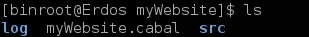

Lecture 11
Snap and XMonad: Haskell in the Real World
F12, then click ConsoleF12, then click ConsoleCtrl+Shift+k↓, PgDn, n, j |
next slide |
↑, PgUp, p, k |
prev slide |
Esc |
enables ctrl+f globally |
A web application framework is a software framework that is designed to support the development of dynamic websites, web applications and web services.
$ cabal update
$ cabal install snap
Snap installs in ~/.cabal/bin
snap.
~/.bashrc
# add this line somewhere near the end:
# naturally, change "binroot" to your username
PATH=$PATH:/home/binroot/.cabal/bin
You're ready to start using Snap
$ mkdir myWebsite
$ cd myWebsite
$ snap init barebones
We now have two folders and a .cabal file
The barebones project compiles out of the box.
Just do:
cabal install
Your project installs in ~/.cabal/bin
Run ~/.cabal/bin/myWebsite from the terminal
$ myWebsite
You are now running a webserver on port 8000
Open up your web browser and go to localhost:8000 to see your website!
myWebsite -p 1234)
-- from Main.hs
site :: Snap ()
site =
ifTop (writeBS "hello world") <|>
route [ ("foo", writeBS "bar")
, ("echo/:echoparam", echoHandler)
] <|>
dir "static" (serveDirectory ".")
What happens when you visit these endpoints?
"hello world""bar":stuff/static/something.pdf
site :: Snap ()
site =
ifTop (writeBS "hello world") <|>
route [ ("foo", writeBS "bar")
, ("echo/:echoparam", echoHandler)
] <|>
dir "static" (serveDirectory ".")
<|> is a fancy if-statement.
route is an effecient mapping of endpoint to action
Time to see how real websites are made!
Start working in a new folder, myRealWebsite
$ mkdir myRealWebsite
$ cd myRealWebsite
Now, don't install with barebones. Instead do:
$ snap init
$ cabal install
$ myRealWebsite
Explore your website at localhost:8000
Snap uses Heist, a website templating engine.
Find base.tpl in myRealWebsite/snaplets/heist/templates/
You can see how this file is a "template", and <apply-content/> substitutes in for something else.
All code lives in the src/ folder.
Open Site.hs and examine the app function.
Play around with Snap.
Make an endpoint /fac/:num that returns the factorial of the :num.
Let's shift gears and talk about another popular Haskell program
XMonad is a window manager that tiles windows automatically
Check out what people are saying
After you install XMonad, you can configure the look and feel in a xmonad.hs file.